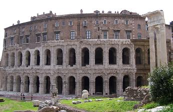
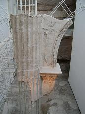
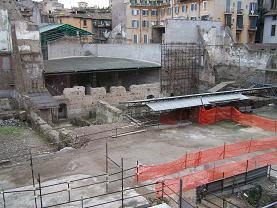

|
Teatro de Pompeyo
El Teatro de Pompeyo se edificó en torno al año
55 a.e.c., se mantuvo en uso hasta el siglo V.
El primer edificio de la ciudad construido en mármol (theatrum marmoleum). Las
dimensiones del teatro eran enormes. La cávea tenía 150 metros de diámetro, y la
escena 90m. Junto al él se hallaba la Curia Pompeyana, donde se reunía
ocasionalmente el Senado Romano y donde fue asesinado Julio César. Los escasos
restos se encuentran en el subsuelo de la plaza de Largo di Torre Argentina, en
la Via di Grotta Pinta, y alguna bóvedas también pueden observarse en sótanos y
restaurante de esta misma calle. La zona fue excavada por orden de Mussolini
durante las décadas de los 20 y los 30. Durante la Edad Media siguió existiendo
aunque usado como cantera de piedra. Actualmente las calles del campo de Fiori
conservan la forma del teatro.
Teatro de Marcelo

|
 |
 |
 |
El Teatro de Marcelo fue construido
inicialmente por Cesar y finalizado por Augusto, dedicándoselo a su sobrino
Marcelo.
En el año 17 a.e.c., cuando las obras aún no habían sido terminadas, Augusto
celebró los ludi saecularis, cantados por Horacio. El día de la inauguración
Augusto se cayó de espaldas al ceder el asiento. Fue uno de los más grandes
teatros romanos, con una altura de 32 m. Los dos pisos inferiores estaban
compuestos por 41 arcos de los que se conservan 12.
Se calcula que la cávea (129,80 metros de diámetro) podía albergar entre unos
20.000 espectadores. Fue dañado en el incendio del año 64 y durante las luchas
entre Vespasiano y Vitelio y fue finalmente abandonado a principios del siglo IV.
Rápidamente fue utilizado como cantera y, en el siglo IV, sus bloques fueron
utilizados para reparar el puente Cestio.
En la actualidad se observa que su base corresponde a las ruinas del teatro,
pero sin embargo los dos pisos superiores son viviendas; debido a que fue
transformado por la familia Savelli, que lo adquirió y le dio la forma de
palacio renacentista.
El Teatro de Marcelo, tal y como lo vemos hoy, es fruto de la restauración y
liberación de postizos y ocupantes llevada a cabo entre 1926 y 1932. En el siglo
pasado el nivel del suelo tenía tapados los arcos.
Teatro de Balbo
El Teatro Balbo es el más pequeño de
los tres teatros de Roma, pero fue el mejor decorado. Tenia capacidad para unos
7.700 espectadores. Construido por Lucio Cornelio Balbo, en 13 a.e.c. Fue
destruido por un incendio durante el reinado de Tito y posteriormente
restaurado, probablemente por Domiciano. Reutilizado durante la Edad Media como
tiendas y como iglesia. Anexo al teatro se halla la Cripta Balbi. La Cripta
Balbi tiene del lado sur al Porticus Minucia, cuyos restos son visibles en Vía
Boteghe Oscure. Hoy es la sede del Museo Nazionale Romano.
La Cripta Balbi originariamente estuvo compuesta de un teatro, un complejo de
cuatro pisos y un patio. Era un lugar de relajación y descanso entre las obras.
|
 |
 |
MENÚ |